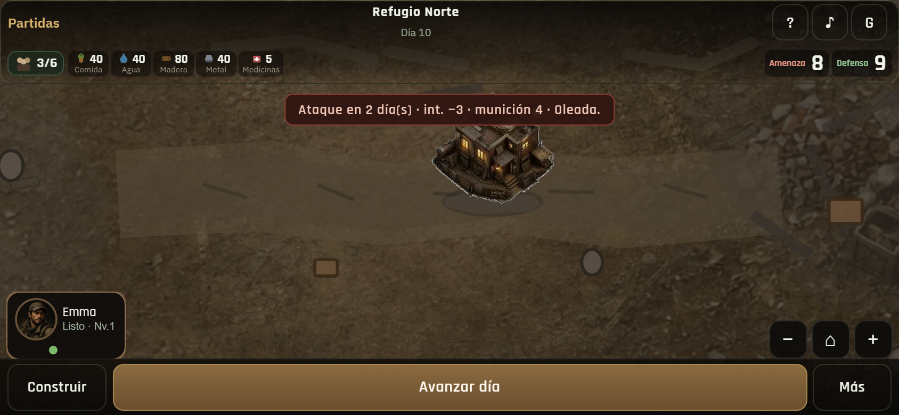
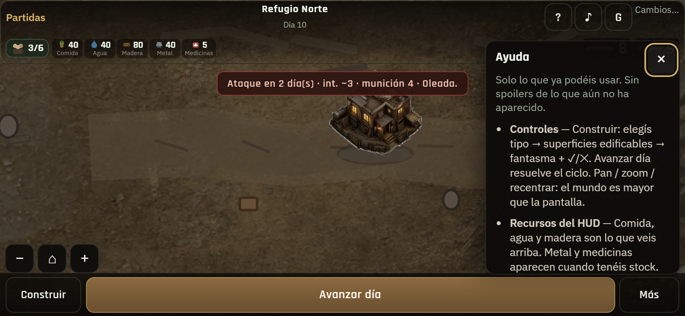
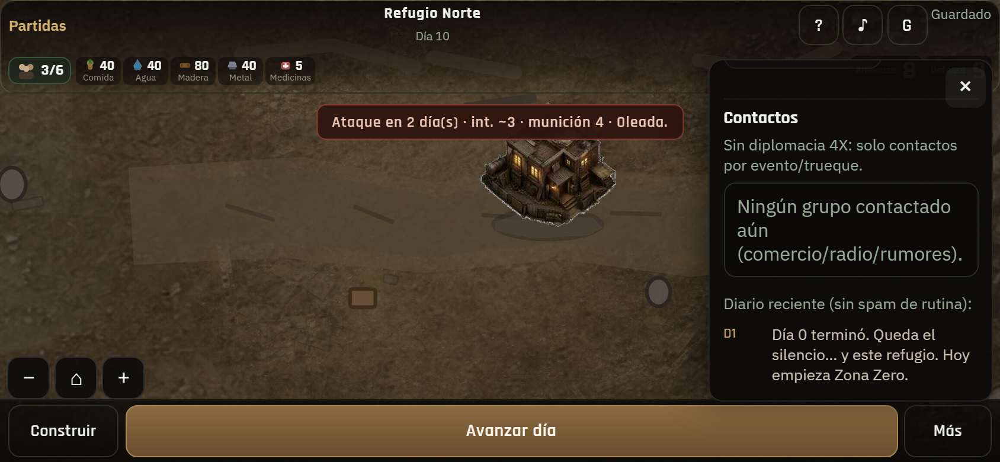
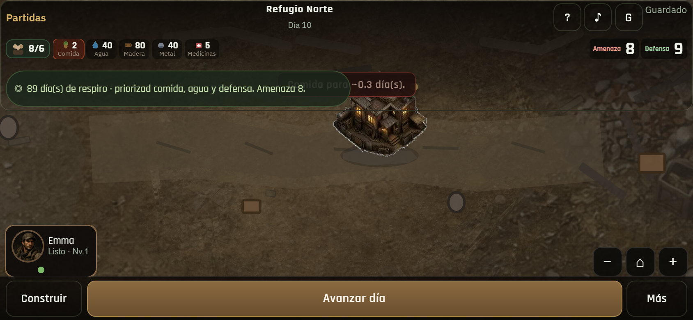
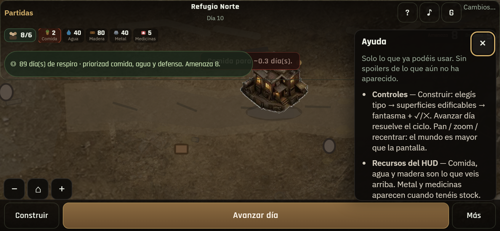
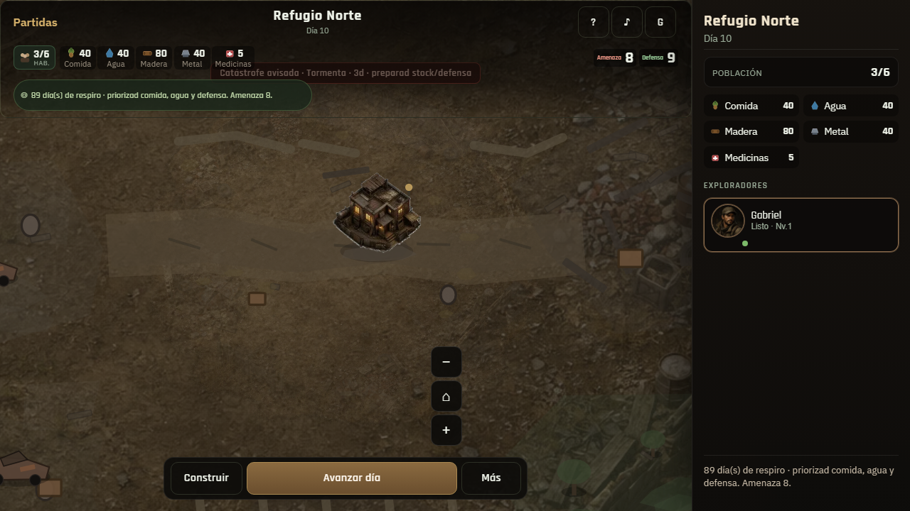
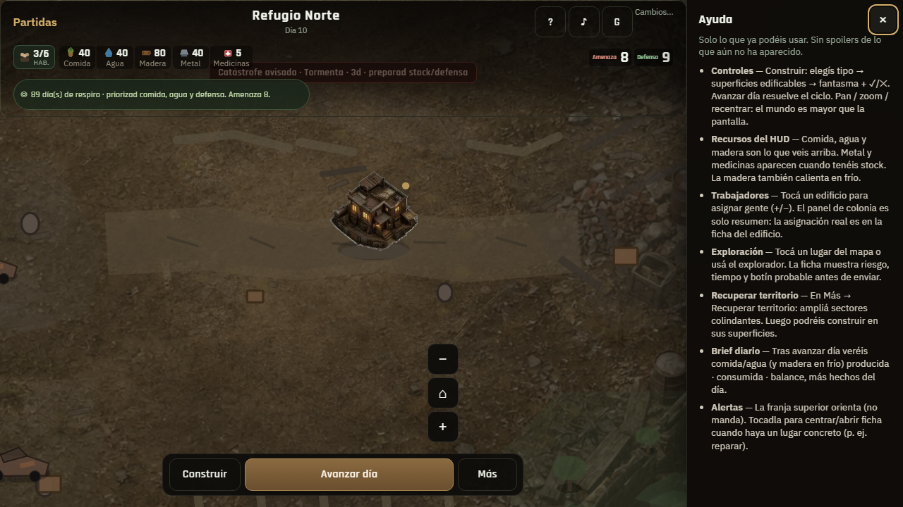
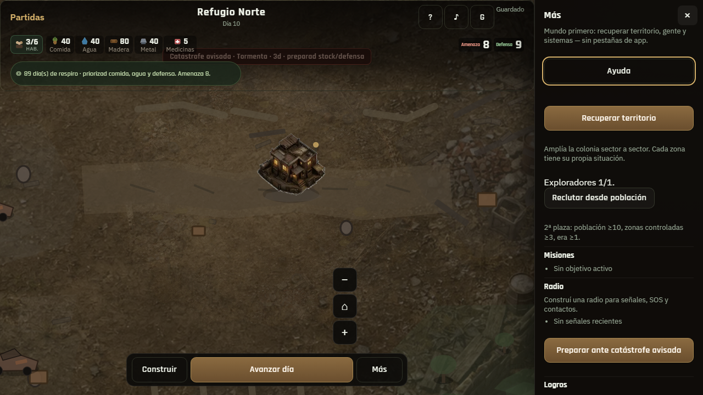
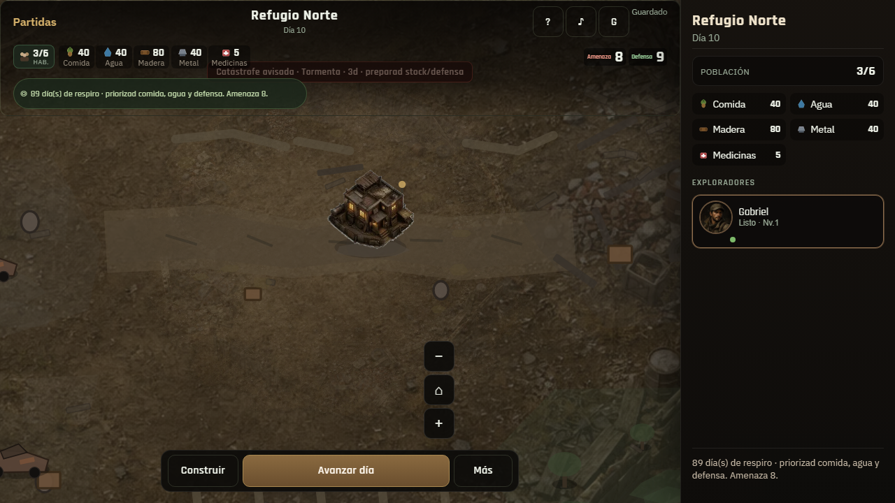
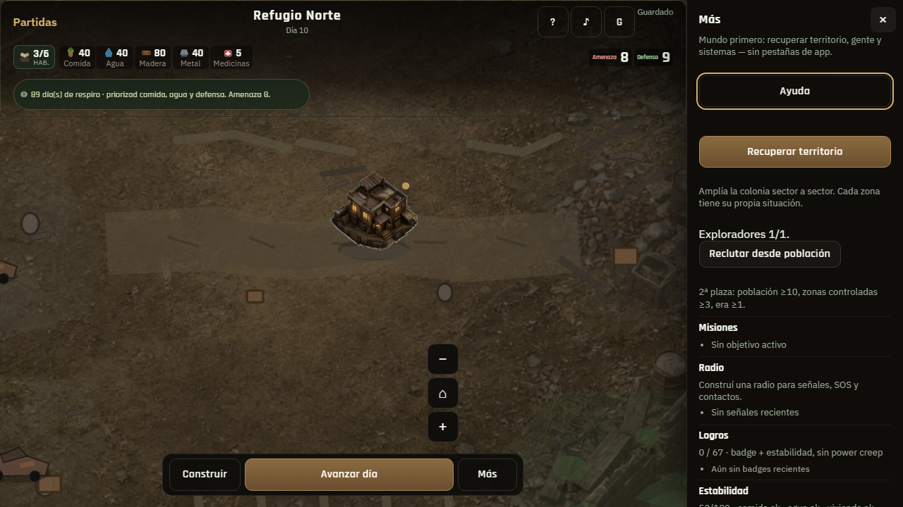

01 · Banner críticoHostiles · recovery no banner

02 · AyudaTemas gated · sin spoilers

03 · Diario en MásSin spam routine

04 · Comida críticaCapa critical

05 · Ayuda desde Más§21.3 acceso dual

06 · Catástrofe desktopBanner critical

07 · Ayuda desktopPanel lateral

08 · Diario desktopLista filtrada

09 · Targets HUDIconos ≥44 · focus

10 · Mundo + fichaSin tabs de app